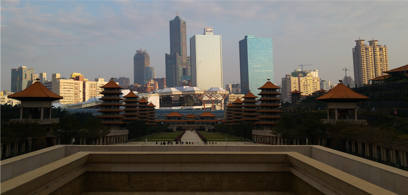

In an earlier post, I have asked you guys why you are visiting this blog. If you feel like contributing to my informal study, please do so now by filling out this questionnaire. If you just want to read and watch pictures, what most of the answers indicated, just keep scrolling down! Because this time we’ve got Kaohsiung in store!

Kaohsiung
Yes, we are getting old cows out of the moat. (This is an old Dutch proverb meaning “to talk about stuff that has gone by a long time ago”.) During the winter vacation this year – yes, it’s summer now, but remember children that winter is coming – CJ and I took a trip to the South of Taiwan.
Chiayi and the Southern Palace Museum
Our first stop was actually Chiayi, a county that is situated somewhat in the midwest of Taiwan. It is also the location of the Southern Branch of the National Palace Museum 故宮南院. When we were there, the first thing that you notice is the unusual shape of the building. I hope this picture does justice to the super cool architecture:

Here is a selection of fine brush paintings. I love how there is a contrast between thicker lines and slight touches to fill out the rest. Like many Chinese paintings, the painting is only partially construed by the artist, the other half has to be imagined by the viewer. This way, paintings really become interactive.


Then there were also the two wrestlers.

And the doggies by Castiglione.


Kaoshiung city
Next on our stop was Kaoshiung (gāoxióng 高雄), the city formerly known as Takau – ‘bamboo forest’ in the Siraya language. The cheeky Chinese of the Ming dynasty transliterated this as dǎ gǒu 打狗 ‘hitting the dog’. Then, fast forwarding a bit, the Japanese eventually took control of Taiwan after the Shimonoseki treaty in 1895, and also took this ‘takao’ as the name, but gave it characters that fit with this pronunciation: taka 高 and ō 雄. So that’s how this place went from a bamboo forest, where they hit dogs to being a big hero (高雄 ‘tall hero’).
They have a beautiful public library, which was the first place we went after checking in at our hotel near the train station, very presumably also the red light district…

Another landmark of Kaohsiung, 85 Sky Tower. It’s tall tower with – how did you guess – 85 floors. It’s 347.5 m tall and meant to look like the character 高, which, as you no doubt remember from two a few lines above, is how you write Kaoshiung in Chinese.

Foguangshan
One of the coolest daytrips you can take from Kaohsiung is to Foguangshan, literally the Mountain 山 of the light 光 of Buddha 佛. It’s a Buddhist monastary. But one of a scale I’d never seen before. To give you an idea, here is a picture from one of the higher points in the complex:

And here is the same picture with two linguistics for scale:

They had many different exhibitions throughout the monastary, explaining the history of the Buddhist cult as well as the history of the place itself. I was a little bit afraid there would be this conversion message to all visitors, but they did not really harass you with that. On the contrary, they tried to emphasize all the good sides of (their version of) Buddhism. Noteworthy is the restaurant all the way in the back, where they serve some really good veggie food for foodies and non-foodies all alike.
Of course, they possess a relic of Buddha: a tooth in this case. It was very interesting to see how this relic is venerated by pilgrims and tourists as they pass by. It can be found in the main shrine of the monastary:

So, all in all, I would definitely recommend people visiting this monastary.

Pier 2 and British consulate
Another tourist spot and artsy place is the Pier 2, uhh, pier, where they recently started installing a tram system (I’m told that it’s apparently ‘light rail’ in English but I refuse to use that word. It’s a tram.) I feel that the whole implementation of a tram system in Kaohsiung hasn’t been thoroughly thought through, but I hope it becomes more efficient once it’s completed. At the moment, you can just go from the southwest to the southeast – which is fun, we did it, but, you know, kind of slow.
Anyways, Pier 2 offered some really nice views:


They even had their own Manneken Pis! I would say it’s dormant for 90% of the time, but lo-and-behold, it started peeing just as we arrived:

Afterwards, we walked a bit further onto the old British consulated and had a fancy high tea, savouring not only the bites of this treat, but also the view of the beautiful National Sun Yat-Sen University 中山大學. Can I have a campus located next to the ocean?

And we also ran into an old classmate from a group project I had done that semester. I lost the pictures I took of him, but he took a picture of the two of us:

Finally, after having been to the Buddhist monastary, the light of the Buddha was within me. That is why I meditated beneath the bodhi tree and only stood up after the light was good and a nice picture of me had been taken.

The Paiwan aboriginals of Pingtung
Another daytrip we did was to the Pingtung county, adjacent to Kaohsiung. CJ had done his military service in a local aboriginal village of the Paiwan 排灣 tribe on the mountain. So to the village of Sandimen 三地門, Timur in Paiwan, we were headed for the day. It was really interesting to meet up with some of CJ’s old colleagues in the local elementary school. And we had a really good dinner with some of his closest friends that evening, which I would sign up for again anytime.
Part of the Paiwan iconography are snakes, as well as phalluses (phalli?). Here’s an example:

After visiting the school and the best barbecued luch I could have wanted, especially in price-value comparison, CJ took me to a nearby aboriginal park.

They had an interesting exhibition going on there. I like the use of the acrylic paint (what I used when I did some painting myself), and the use of different materials in the last picture.


After this short visit to the art part and the historical exhibition that detailed the history and classification of the different aboriginal tribes in Taiwan and some of their customs, we went into the park, where we were greeted by this mural – another typical aboriignal symbol:

Then we crossed this rainbow bridge – hanivalval is ‘rainbow’ in Bunun. Don’t you just love the sound of that word?

We saw huts, and the wild stream, which was lacking a bit of water.


Until finally, we arrived at a show! This show had all dancers portray one of the different aboriginal tribes and even singing in their language, just to immerse yourself in this culture. Super cool!!


Lastly, we crossed the tallest bridge pier in Taiwan: the 99 m high Guchuan 谷川 bridge.

Formosa Boulevard Station
Currently, the only crossing between the two metro lines in use is at the Formosa Boulevard Station (美麗島站). It lures many a tourist out of the MRT system, in order to catch a glimps of the colourful art that’s displayed there:


The Lotus Pond
This was actually my second time visiting Kaohsiung, the first time was during (technically right after it ended) my really great summer school in 2014. That trip involved A LOT of rain, and although people always tell me “IT NEVER RAINS IN KAOHSIUNG”, I am still to enjoy a rainless time in the Big Hero.
So what I now will show involves secret footage of a younger (and I guess thinner?) me, my good friend Snow, who we met up with this time as well, and my excellent guide from that time Robert, taken from the Cijin lighthouse:


Here the generous Robert offered me some good icecream and an icecream cola float (I think that was my first ever!)


Anyway, that time Snow took me to the Lotus Pond, so I went there again with CJ this time. Here’s me and my ride:

So to round up Kaohsiung and this post, here is one more picture of the city!